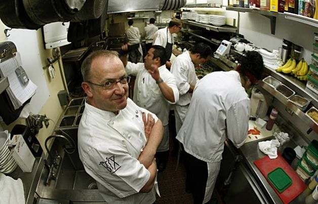

Current Jobs Available
Kitchen Staff
Being a kitchen staff the employee needs to cook, prepare and present the food efficiently, meeting the standards of the brand. They need to keep the kitchen area clean, tidy and hygienic all the time. The essential task is to always abide with procedures and policies of the company and be a part of all relevant team meetings. The kitchen staff is also required to complete documentations of the company and the key tasks in every shift and follow the commands given by the head office and management team.
Delivery Drivers

The delivery driver will work with other members of the distribution team to increase company profitability and customer satisfaction by delivering complete, accurate and on-time deliveries to the company’s customers. The driver will represent the company in a highly professional, safe and cost-effective manner that complies with DOT and other applicable regulations.